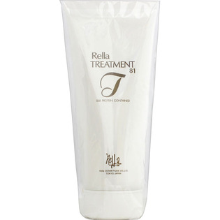

返回列表
产品名称：レラ・トリートメント８１

夢幻舎 レラ・トリートメント８１ ３００ｇ
メーカー 夢幻舎
JANコード 4991804610990
商品の特徴
SILK PROTEIN CONTAINED
- 成分・分量
- ＜成分＞
水、セタノール、オクチルドデカノール、ステアルトリモニウムクロリド、イソプロパノール、オレス-2、加水分解コラーゲン、シルクエキス、ベニバナ黄、香料、エタノール、メチルパラベン、ブチルパラベン、フェノキシエタノール
- 用法及び用量
- ＜使用方法＞
適量を手のひらにとり 髪全体によくなじませしばらく放置した後よくすすいでください 傷んだところを中心につけていただくと効果的です